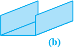
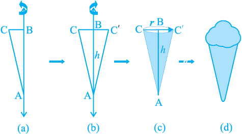
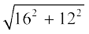
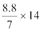
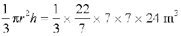
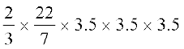

Chapter 13
Surface Areas and Volumes
13.1 Introduction
Wherever we look, usually we see solids. So far, in all our study, we have been dealing with figures that can be easily drawn on our notebooks or blackboards. These are called plane figures. We have understood what rectangles, squares and circles are, what we mean by their perimeters and areas, and how we can find them. We have learnt these in earlier classes. It would be interesting to see what happens if we cut out many of these plane figures of the same shape and size from cardboard sheet and stack them up in a vertical pile. By this process, we shall obtain some solid figures (briefly called solids) such as a cuboid, a cylinder, etc. In the earlier classes, you have also learnt to find the surface areas and volumes of cuboids, cubes and cylinders. We shall now learn to find the surface areas and volumes of cuboids and cylinders in details and extend this study to some other solids such as cones and spheres.
13.2 Surface Area of a Cuboid and a Cube
Have you looked at a bundle of many sheets of paper? How does it look? Does it look like what you see in Fig. 13.1?
Fig. 13.1
That makes up a cuboid. How much of brown paper would you need, if you want to cover this cuboid? Let us see:
First we would need a rectangular piece to cover the bottom of the bundle. That would be as shown in Fig. 13.2(a).
Then we would need two long rectangular pieces to cover the two side ends. Now, it would look like Fig. 13.2 (b).

Now to cover the front and back ends, we would need two more rectangular pieces of a different size. With them, we would now have a figure as shown in Fig. 13.2(c).
This figure, when opened out, would look like Fig. 13.2 (d).
Finally, to cover the top of the bundle, we would require another rectangular piece exactly like the one at the bottom, which if we attach on the right side, it would look like Fig. 13.2(e).
So we have used six rectangular pieces to cover the complete outer surface of the cuboid.
Fig. 13.2
This shows us that the outer surface of a cuboid is made up of six rectangles (in fact, rectangular regions, called the faces of the cuboid), whose areas can be found by multiplying length by breadth for each of them separately and then adding the six areas together.
Now, if we take the length of the cuboid as l, breadth as b and the height as h, then the figure with these dimensions would be like the shape you see in Fig. 13.2(f).
So, the sum of the areas of the six rectangles is:
Area of rectangle 1 (= l × h)
+
Area of rectangle 2 (= l × b)
+
Area of rectangle 3 (= l × h)
+
Area of rectangle 4 (= l × b)
+
Area of rectangle 5 (= b × h)
+
Area of rectangle 6 (= b × h)
= 2(l × b) + 2(b × h) + 2(l × h)
= 2(lb + bh + hl)
This gives us:
Surface Area of a Cuboid = 2(lb + bh + hl)
where l, b and h are respectively the three edges of the cuboid.
Note : The unit of area is taken as the square unit, because we measure the magnitude of a region by filling it with squares of side of unit length.
For example, if we have a cuboid whose length, breadth and height are 15 cm,
10 cm and 20 cm respectively, then its surface area would be:
2[(15 × 10) + (10 × 20) + (20 × 15)]cm2
= 2(150 + 200 + 300)cm2
= 2 × 650cm2
= 1300cm2
Recall that a cuboid, whose length, breadth and height are all equal, is called a cube. If each edge of the cube is a, then the surface area of this cube would be
2(a × a + a × a + a × a), i.e., 6a2 (see Fig. 13.3), giving us
Surface Area of a Cube = 6a2
where a is the edge of the cube.
Fig. 13.3
Suppose, out of the six faces of a cuboid, we only find the area of the four faces, leaving the bottom and top faces. In such a case, the area of these four faces is called the lateral surface area of the cuboid. So, lateral surface area of a cuboid of length l, breadth b and height h is equal to 2lh + 2bh or 2(l + b)h. Similarly, lateral surface area of a cube of side a is equal to 4a2.
Keeping in view of the above, the surface area of a cuboid (or a cube) is sometimes also referred to as the total surface area. Let us now solve some examples.
Example 1 : Mary wants to decorate her Christmas tree. She wants to place the tree on a wooden box covered with coloured paper with picture of Santa Claus on it (see Fig. 13.4).
She must know the exact quantity of paper to buy for this purpose. If the box has length, breadth and height as 80 cm, 40 cm and 20 cm respectively how many square sheets of paper of side 40 cm would she require?
Solution : Since Mary wants to paste the paper on the outer surface of the box; the quantity of paper required would be equal to the surface area of the box which is of the shape of a cuboid. The dimensions of the box are:
Length = 80 cm, Breadth = 40 cm, Height = 20 cm.
The surface area of the box = 2(lb + bh + hl)
= 2[(80 × 40) + (40 × 20) + (20 × 80)]cm2
= 2[3200 + 800 + 1600]cm2
= 2 × 5600cm2 = 11200cm2
The area of each sheet of the paper = 40 × 40cm2
= 1600cm2
Therefore, number of sheets required =
So, she would require 7 sheets.
Example 2 : Hameed has built a cubical water tank with lid for his house, with each outer edge 1.5 m long. He gets the outer surface of the tank excluding the base, covered with square tiles of side 25 cm (see Fig. 13.5). Find how much he would spend for the tiles, if the cost of the tiles is Rs 360 per dozen.
Solution : Since Hameed is getting the five outer faces of the tank covered with tiles, he would need to know the surface area of the tank, to decide on the number of tiles required.
Edge of the cubical tank = 1.5 m = 150 cm (= a)
So, surface area of the tank = 5 × 150 × 150cm2
Area of each square tile = side × side = 25 × 25cm2
So, the number of tiles required =
= = 180
Cost of 1 dozen tiles, i.e., cost of 12 tiles = Rs 360
Therefore, cost of one tile = Rs = Rs 30
So, the cost of 180 tiles = 180 × Rs 30 = Rs 5400
EXERCISE 13.1
1. A plastic box 1.5 m long, 1.25 m wide and 65 cm deep is to be made. It is opened at the top. Ignoring the thickness of the plastic sheet, determine:
(i) The area of the sheet required for making the box.
(ii) The cost of sheet for it, if a sheet measuring 1m2 costs Rs 20.
2. The length, breadth and height of a room are 5 m, 4 m and 3 m respectively. Find the cost of white washing the walls of the room and the ceiling at the rate of
Rs 7.50 per m2.
3. The floor of a rectangular hall has a perimeter 250 m. If the cost of painting the four walls at the rate of Rs 10 per m2 is Rs 15000, find the height of the hall.
[Hint : Area of the four walls = Lateral surface area.]
4. The paint in a certain container is sufficient to paint an area equal to 9.375 m2. How many bricks of dimensions 22.5 cm × 10 cm × 7.5 cm can be painted out of this container?
5. A cubical box has each edge 10 cm and another cuboidal box is 12.5 cm long, 10 cm wide and 8 cm high.
(i) Which box has the greater lateral surface area and by how much?
(ii) Which box has the smaller total surface area and by how much?
6. A small indoor greenhouse (herbarium) is made entirely of glass panes (including base) held together with tape. It is 30 cm long, 25 cm wide and 25 cm high.
(i) What is the area of the glass?
(ii) How much of tape is needed for all the 12 edges?
7. Shanti Sweets Stall was placing an order for making cardboard boxes for packing their sweets. Two sizes of boxes were required. The bigger of dimensions 25 cm × 20 cm × 5 cm and the smaller of dimensions 15 cm × 12 cm × 5 cm. For all the overlaps, 5% of the total surface area is required extra. If the cost of the cardboard is Rs 4 for 1000 cm2, find the cost of cardboard required for supplying 250 boxes of each kind.
8. Parveen wanted to make a temporary shelter for her car, by making a box-like structure with tarpaulin that covers all the four sides and the top of the car (with the front face as a flap which can be rolled up). Assuming that the stitching margins are very small, and therefore negligible, how much tarpaulin would be required to make the shelter of height 2.5 m, with base dimensions 4 m × 3 m?
13.3 Surface Area of a Right Circular Cylinder
If we take a number of circular sheets of paper and stack them up as we stacked up rectangular sheets earlier, what would we get (see Fig. 13.6)?
Fig. 13.6
Here, if the stack is kept vertically up, we get what is called a right circular cylinder, since it has been kept at right angles to the base, and the base is circular. Let us see what kind of cylinder is not a right circular cylinder.
In Fig 13.7 (a), you see a cylinder, which is certainly circular, but it is not at right angles to the base. So, we can not say this a right circular cylinder. of course, if we have a cylinder with a non circular base, as you see in Fig. 13.7 (b), then we also cannot call it a right circular cylinder.
Fig. 13.7
Remark : Here, we will be dealing with only right circular cylinders. So, unless stated otherwise, the word cylinder would mean a right circular cylinder.
Now, if a cylinder is to be covered with coloured paper, how will we do it with the minimum amount of paper? First take a rectangular sheet of paper, whose length is just enough to go round the cylinder and whose breadth is equal to the height of the cylinder as shown in Fig. 13.8.
Fig. 13.8
The area of the sheet gives us the curved surface area of the cylinder. Note that the length of the sheet is equal to the circumference of the circular base which is equal to 2πr.
So, curved surface area of the cylinder
= area of the rectangular sheet = length × breadth
= perimeter of the base of the cylinder × h
= 2πr × h
Therefore,
Curved Surface Area of a Cylinder = 2πrh
where r is the radius of the base of the cylinder and h is the height of the cylinder.
Remark : In the case of a cylinder, unless stated otherwise, ‘radius of a cylinder’ shall mean’ base radius of the cylinder’.
If the top and the bottom of the cylinder are also to be covered, then we need two circles (infact, circular regions) to do that, each of radius r, and thus having an area of πr2 each (see Fig. 13.9), giving us the total surface area as 2πrh + 2πr2 = 2πr(r + h).
So,
Total Surface Area of a Cylinder = 2πr(r + h)
where h is the height of the cylinder and r its radius.
Remark : You may recall from Chapter 1 that π is an irrational number. So, the value of π is a non-terminating, non-repeating decimal. But when we use its value in our calculations, we usually take its value as approximately equal to  or 3.14.
or 3.14.
Example 3 : Savitri had to make a model of a cylindrical kaleidoscope for her science project. She wanted to use chart paper to make the curved surface of the kaleidoscope. (see Fig 13.10). What would be the area of chart paper required by her, if she wanted to make a kaleido
scope of length 25 cm with a 3.5 cm radius? You may take π =  .
.
Solution : Radius of the base of the cylindrical kaleidoscope (r) = 3.5 cm.
Height (length) of kaleidoscope (h) = 25 cm.
Area of chart paper required = curved surface area of the kaleidoscope
= 2πrh
=
= 550cm2
EXERCISE 13.2
Assume π =  , unless stated otherwise.
, unless stated otherwise.
1. The curved surface area of a right circular cylinder of height 14 cm is 88cm2. Find the diameter of the base of the cylinder.
2. It is required to make a closed cylindrical tank of height 1 m and base diameter 140 cm from a metal sheet. How many square metres of the sheet are required for the same?
3. A metal pipe is 77 cm long. The inner diameter of a cross section is 4 cm, the outer diameter being 4.4 cm
(see Fig. 13.11). Find its
(i) inner curved surface area,
(ii) outer curved surface area,
(iii) total surface area.
4. The diameter of a roller is 84 cm and its length is 120 cm. It takes 500 complete revolutions to move once over to level a playground. Find the area of the playground in m2.
5. A cylindrical pillar is 50 cm in diameter and 3.5 m in height. Find the cost of painting the curved surface of the pillar at the rate of Rs 12.50 per m2.
6. Curved surface area of a right circular cylinder is 4.4m2. If the radius of the base of the cylinder is 0.7 m, find its height.
7. The inner diameter of a circular well is 3.5 m. It is 10 m deep. Find
(i) its inner curved surface area,
(ii) the cost of plastering this curved surface at the rate of Rs 40 per m2.
8. In a hot water heating system, there is a cylindrical pipe of length 28 m and diameter 5 cm. Find the total radiating surface in the system.
9. Find
(i) the lateral or curved surface area of a closed cylindrical petrol storage tank that is 4.2 m in diameter and 4.5 m high.
(ii) how much steel was actually used, if of the steel actually used was wasted in making the tank.
10. In Fig. 13.12,
you see the frame of a lampshade. It is to be covered with a decorative cloth. The frame has a base diameter of 20 cm and height of 30 cm. A margin of 2.5 cm is to be given for folding it over the top and bottom of the frame. Find how much cloth is required for covering the lampshade.
11. The students of a Vidyalaya were asked to participate in a competition for making and decorating penholders in the shape of a cylinder with a base, using cardboard. Each penholder was to be of radius 3 cm and height 10.5 cm. The Vidyalaya was to supply the competitors with cardboard. If there were 35 competitors, how much cardboard was required to be bought for the competition?
13.4 Surface Area of a Right Circular Cone
So far, we have been generating solids by stacking up congruent figures. Incidentally, such figures are called prisms. Now let us look at another kind of solid which is not a prism. (These kinds of solids are called pyramids). Let us see how we can generate them.
Activity : Cut out a right-angled triangle ABC right angled at B. Paste a long thick string along one of the perpendicular sides say AB of the triangle [see Fig. 13.13(a)]. Hold the string with your hands on either sides of the triangle and rotate the triangle about the string a number of times. What happens? Do you recognize the shape that the triangle is forming as it rotates around the string [see Fig. 13.13(b)]? Does it remind you of the time you had eaten an ice-cream heaped into a container of that shape [see Fig. 13.13 (c) and (d)]?

Fig. 13.13
This is called a right circular cone. In Fig. 13.13(c) of the right circular cone, the point A is called the vertex, AB is called the height, BC is called the radius and AC is called the slant height of the cone. Here B will be the centre of circular base of the cone. The height, radius and slant height of the cone are usually denoted by h, r and l respectively. Once again, let us see what kind of cone we can not call a right circular cone. Here, you are (see Fig. 13.14)!
What you see in these figures are not right circular cones; because in (a), the line joining its vertex to the centre of its base is not at right angle to the base, and in (b) the base is not circular.
As in the case of cylinder, since we will be studying only about right circular cones, remember that by ‘cone’ in this chapter, we shall mean a ‘right circular cone.’
Activity : (i) Cut out a neatly made paper cone that does not have any overlapped paper, straight along its side, and opening it out, to see the shape of paper that forms the surface of the cone. (The line along which you cut the cone is the slant height of the cone which is represented by l). It looks like a part of a round cake.
(ii) If you now bring the sides marked A and B at the tips together, you can see that the curved portion of Fig. 13.15 (c) will form the circular base of the cone.
Fig. 13.15
(iii) If the paper like the one in Fig. 13.15 (c) is now cut into hundreds of little pieces, along the lines drawn from the point O, each cut portion is almost a small triangle, whose height is the slant height l of the cone.
(iv) Now the area of each triangle =
× base of each triangle × l.
So, area of the entire piece of paper
= sum of the areas of all the triangles
= =
= × l × length of entire curved boundary of Fig. 13.15(c)
(as b1 + b2 + b3 + . . . makes up the curved portion of the figure)
But the curved portion of the figure makes up the perimeter of the base of the cone and the circumference of the base of the cone = 2πr, where r is the base radius of the cone.
So,
Curved Surface Area of a Cone = × l × 2πr = πrl
where r is its base radius and l its slant height.
Note that l2 = r2 + h2 (as can be seen from Fig. 13.16), by applying Pythagoras Theorem. Here h is the height of the cone.
Therefore, l =
Now if the base of the cone is to be closed, then a circular piece of paper of radius r is also required whose area is πr2.
So,
Total Surface Area of a Cone = π rl + π r2 = π r(l + r)
Example 4 : Find the curved surface area of a right circular cone whose slant height is 10 cm and base radius is 7 cm.
Solution : Curved surface area = πrl
= × 7 × 10cm2
= 220cm2
Example 5 : The height of a cone is 16 cm and its base radius is 12 cm. Find the curved surface area and the total surface area of the cone (Use π = 3.14).
Solution : Here, h = 16 cm and r = 12 cm.
So, from l2 = h2 + r2, we have
l =  cm = 20 cm
So, curved surface area = πrl
= 3.14 × 12 × 20cm2
= 753.6cm2
Further, total surface area = πrl + πr2
= (753.6 + 3.14 × 12 × 12)cm2
= (753.6 + 452.16)cm2
= 1205.76cm2
Example 6 : A corn cob (see Fig. 13.17), shaped somewhat like a cone, has the radius of its broadest end as 2.1 cm and length (height) as 20 cm. If each 1cm2 of the surface of the cob carries an average of four grains, find how many grains you would find on the entire cob.
Solution : Since the grains of corn are found only on the curved surface of the corn cob, we would need to know the curved surface area of the corn cob to find the total number of grains on it. In this question, we are given the height of the cone, so we need to find its slant height.
Therefore, the curved surface area of the corn cob = πrl
=  × 2.1 × 20.11 cm2 = 132.726 cm2 = 132.73 cm2 (approx.)
× 2.1 × 20.11 cm2 = 132.726 cm2 = 132.73 cm2 (approx.)
Number of grains of corn on 1cm2 of the surface of the corn cob = 4
Therefore, number of grains on the entire curved surface of the cob
= 132.73 × 4 = 530.92 = 531 (approx.)
So, there would be approximately 531 grains of corn on the cob.
EXERCISE 13.3
(Assume π =  , unless stated otherwise.)
, unless stated otherwise.)
1. Diameter of the base of a cone is 10.5 cm and its slant height is 10 cm. Find its curved surface area.
2. Find the total surface area of a cone, if its slant height is 21 m and diameter of its base is 24 m.
3. Curved surface area of a cone is 308 cm2 and its slant height is 14 cm. Find
(i) radius of the base and (ii) total surface area of the cone.
4. A conical tent is 10 m high and the radius of its base is 24 m. Find
(i) slant height of the tent.
(ii) cost of the canvas required to make the tent, if the cost of 1m2 canvas is Rs 70.
5. What length of tarpaulin 3 m wide will be required to make conical tent of height 8 m and base radius 6 m? Assume that the extra length of material that will be required for stitching margins and wastage in cutting is approximately 20 cm (Use π = 3.14).
6. The slant height and base diameter of a conical tomb are 25 m and 14 m respectively. Find the cost of white-washing its curved surface at the rate of Rs 210 per 100 m2.
7. A joker’s cap is in the form of a right circular cone of base radius 7 cm and height
24 cm. Find the area of the sheet required to make 10 such caps.
8. A bus stop is barricaded from the remaining part of the road, by using 50 hollow cones made of recycled cardboard. Each cone has a base diameter of 40 cm and height 1 m. If the outer side of each of the cones is to be painted and the cost of painting is Rs 12 perm2, what will be the cost of painting all these cones? (Use π = 3.14 and take = 1.02)
13.5 Surface Area of a Sphere
What is a sphere? Is it the same as a circle? Can you draw a circle on a paper? Yes, you can, because a circle is a plane closed figure whose every point lies at a constant distance (called radius) from a fixed point, which is called the centre of the circle. Now if you paste a string along a diameter of a circular disc and rotate it as you had rotated the triangle in the previous section, you see a new solid (see Fig 13.18). What does it resemble? A ball? Yes. It is called a sphere.
Fig. 13.18
Can you guess what happens to the centre of the circle, when it forms a sphere on rotation? Of course, it becomes the centre of the sphere. So, a sphere is a three dimensional figure (solid figure), which is made up of all points in the space, which lie at a constant distance called the radius, from a fixed point called the centre of the sphere.
Note : A sphere is like the surface of a ball. The word solid sphere is used for the solid whose surface is a sphere.
Activity : Have you ever played with a top or have you at least watched someone play with one? You must be aware of how a string is wound around it. Now, let us take a rubber ball and drive a nail into it. Taking support of the nail, let us wind a string around the ball. When you have reached the ‘fullest’ part of the ball, use pins to keep the string in place, and continue to wind the string around the remaining part of the ball, till you have completely covered the ball [see Fig. 13.19(a)]. Mark the starting and finishing points on the string, and slowly unwind the string from the surface of the ball.
Now, ask your teacher to help you in measuring the diameter of the ball, from which you easily get its radius. Then on a sheet of paper, draw four circles with radius equal to the radius of the ball. Start filling the circles one by one, with the string you had wound around the ball [see Fig. 13.19(b)].
Fig. 13.19
What have you achieved in all this?
The string, which had completely covered the surface area of the sphere, has been used to completely fill the regions of four circles, all of the same radius as of the sphere.
So, what does that mean? This suggests that the surface area of a sphere of radius r
= 4 times the area of a circle of radius r = 4 × (πr2)
So,
Surface Area of a Sphere = 4 πr2
where r is the radius of the sphere.
How many faces do you see in the surface of a sphere? There is only one, which is curved.
Now, let us take a solid sphere, and slice it exactly ‘through the middle’ with a plane that passes through its centre. What happens to the sphere?
Yes, it gets divided into two equal parts (see Fig. 13.20) ! What will each half be called? It is called a hemisphere. (Because ‘hemi’ also means ‘half’)
And what about the surface of a hemisphere? How many faces does it have?
Two! There is a curved face and a flat face (base).
The curved surface area of a hemisphere is half the surface area of the sphere, which is  of 4πr2.
of 4πr2.
Therefore,
Curved Surface Area of a Hemisphere = 2πr2
where r is the radius of the sphere of which the hemisphere is a part.
Now taking the two faces of a hemisphere, its surface area 2πr2 + πr2
So,
Total Surface Area of a Hemisphere = 3πr2
Example 7 :Find the surface area of a sphere of radius 7 cm.
Solution : The surface area of a sphere of radius 7 cm would be
4πr2 = 4 ×  × 7 × 7cm2 = 616cm2
× 7 × 7cm2 = 616cm2
Example 8 : Find (i) the curved surface area and (ii) the total surface area of a hemisphere of radius 21 cm.
Solution : The curved surface area of a hemisphere of radius 21 cm would be
= 2πr2 = 2 ×  × 21 × 21cm2 = 2772cm2
× 21 × 21cm2 = 2772cm2
(ii) the total surface area of the hemisphere would be
3πr2 = 3 ×  × 21 × 21cm2 = 4158cm2
× 21 × 21cm2 = 4158cm2
Example 9 : The hollow sphere, in which the circus motorcyclist performs his stunts, has a diameter of 7 m. Find the area available to the motorcyclist for riding.
Solution : Diameter of the sphere = 7 m. Therefore, radius is 3.5 m. So, the riding space available for the motorcyclist is the surface area of the ‘sphere’ which is
given by
4πr2 = 4 ×  × 3.5 × 3.5m2
× 3.5 × 3.5m2
= 154m2
Example 10 : A hemispherical dome of a building needs to be painted
(see Fig. 13.21). If the circumference of the base of the dome is 17.6 m, find the cost of painting it, given the cost of painting is Rs 5 per 100cm2.
Solution : Since only the rounded surface of the dome is to be painted, we would need to find the curved surface area of the hemisphere to know the extent of painting that needs to be done. Now, circumference of the dome = 17.6 m. Therefore, 17.6 = 2πr. So, the radius of the dome = 17.6 ×  m = 2.8 m
m = 2.8 m
The curved surface area of the dome = 2πr2
= 2 × × 2.8 × 2.8m2
= 49.28m2
Now, cost of painting 100cm2 is Rs 5.
So, cost of painting 1m2 = Rs 500
Therefore, cost of painting the whole dome
= Rs 500 × 49.28
= Rs 24640
EXERCISE 13.4
(Assume π =  , unless stated otherwise.)
, unless stated otherwise.)
1. Find the surface area of a sphere of radius:
(i) 10.5 cm (ii) 5.6 cm (iii) 14 cm
2. Find the surface area of a sphere of diameter:
(i) 14 cm (ii) 21 cm (iii) 3.5 m
3. Find the total surface area of a hemisphere of radius 10 cm. (Use π = 3.14)
4. The radius of a spherical balloon increases from 7 cm to 14 cm as air is being pumped into it. Find the ratio of surface areas of the balloon in the two cases.
5. A hemispherical bowl made of brass has inner diameter 10.5 cm. Find the cost of
tin-plating it on the inside at the rate of Rs 16 per 100 cm2.
6. Find the radius of a sphere whose surface area is 154 cm2.
7. The diameter of the moon is approximately one fourth of the diameter of the earth. Find the ratio of their surface areas.
8. A hemispherical bowl is made of steel, 0.25 cm thick. The inner radius of the bowl is
5 cm. Find the outer curved surface area of the bowl.
9. A right circular cylinder just encloses a sphere of radius r (see Fig. 13.22). Find
(i) surface area of the sphere,
(ii) curved surface area of the cylinder,
(iii) ratio of the areas obtained in (i) and (ii).
13.6 Volume of a Cuboid
You have already learnt about volumes of certain figures (objects) in earlier classes. Recall that solid objects occupy space. The measure of this occupied space is called the Volume of the object.
Note : If an object is solid, then the space occupied by such an object is measured, and is termed the Volume of the object. On the other hand, if the object is hollow, then interior is empty, and can be filled with air, or some liquid that will take the shape of its container. In this case, the volume of the substance that can fill the interior is called the capacity of the container. In short, the volume of an object is the measure of the space it occupies, and the capacity of an object is the volume of substance its interior can accommodate. Hence, the unit of measurement of either of the two is cubic unit.
So, if we were to talk of the volume of a cuboid, we would be considering the measure of the space occupied by the cuboid.
Further, the area or the volume is measured as the magnitude of a region. So, correctly speaking, we should be finding the area of a circular region, or volume of a cuboidal region, or volume of a spherical region, etc. But for the sake of simplicity, we say, find the area of a circle, volume of a cuboid or a sphere even though these mean only their boundaries.
Fig. 13.23
Observe Fig. 13.23. Suppose we say that the area of each rectangle is A, the height up to which the rectangles are stacked is h and the volume of the cuboid is V. Can you tell what would be the relationship between V, A and h?
The area of the plane region occupied by each rectangle × height
= Measure of the space occupied by the cuboid
So, we get A × h = V
That is,
Volume of a Cuboid = base area × height = length × breadth × height
or l × b × h, where l, b and h are respectively the length, breadth and height of the cuboid.
Note : When we measure the magnitude of the region of a space, that is, the space occupied by a solid, we do so by counting the number of cubes of edge of unit length that can fit into it exactly. Therefore, the unit of measurement of volume is cubic unit.
Again
Volume of a Cube = edge × edge × edge = a3
where a is the edge of the cube (see Fig. 13.24).
So, if a cube has edge of 12 cm,
then volume of the cube = 12 × 12 × 12 cm3
= 1728 cm3.
Recall that you have learnt these formulae in earlier classes. Now let us take some examples to illustrate the use of these formulae:
Example 11 : A wall of length 10 m was to be built across an open ground. The height of the wall is 4 m and thickness of the wall is 24 cm. If this wall is to be built up with bricks whose dimensions are 24 cm × 12 cm × 8 cm, how many bricks would be required?
Solution : Since the wall with all its bricks makes up the space occupied by it, we need to find the volume of the wall, which is nothing but a cuboid.
Here, Length = 10 m = 1000 cm
Thickness = 24 cm
Height = 4 m = 400 cm
Therefore, Volume of the wall = length × thickness × height
= 1000 × 24 × 400 cm3
Now, each brick is a cuboid with length = 24 cm, breadth = 12 cm and height = 8 cm
So, volume of each brick = length × breadth × height
= 24 × 12 × 8 cm3
So, number of bricks required =
=
= 4166.6
So, the wall requires 4167 bricks.
Example 12 : A child playing with building blocks, which are of the shape of cubes, has built a structure as shown in Fig. 13.25. If the edge of each cube is 3 cm, find the volume of the structure built by the child.
Solution : Volume of each cube = edge × edge × edge
= 3 × 3 × 3 cm3 = 27 cm3
Number of cubes in the structure = 15
Therefore, volume of the structure = 27 × 15 cm3
= 405 cm3
EXERCISE 13.5
1. A matchbox measures 4 cm × 2.5 cm × 1.5 cm. What will be the volume of a packet containing 12 such boxes?
2. A cuboidal water tank is 6 m long, 5 m wide and 4.5 m deep. How many litres of water can it hold? (1 m3 = 1000 l)
3. A cuboidal vessel is 10 m long and 8 m wide. How high must it be made to hold 380 cubic metres of a liquid?
4. Find the cost of digging a cuboidal pit 8 m long, 6 m broad and 3 m deep at the rate of Rs 30 per m3.
5. The capacity of a cuboidal tank is 50000 litres of water. Find the breadth of the tank, if its length and depth are respectively 2.5 m and 10 m.
6. A village, having a population of 4000, requires 150 litres of water per head per day. It has a tank measuring 20 m × 15 m × 6 m. For how many days will the water of this tank last?
7. A godown measures 40 m × 25 m × 10 m. Find the maximum number of wooden crates each measuring 1.5 m × 1.25 m × 0.5 m that can be stored in the godown.
8. A solid cube of side 12 cm is cut into eight cubes of equal volume. What will be the side of the new cube? Also, find the ratio between their surface areas.
9. A river 3 m deep and 40 m wide is flowing at the rate of 2 km per hour. How much water will fall into the sea in a minute?
13.7 Volume of a Cylinder
Just as a cuboid is built up with rectangles of the same size, we have seen that a right circular cylinder can be built up using circles of the same size. So, using the same argument as for a cuboid, we can see that the volume of a cylinder can be obtained
as : base area × height
= area of circular base × height = πr2h
So,
Volume of a Cylinder = πr2h
where r is the base radius and h is the height of the cylinder.
Example 13 : The pillars of a temple are cylindrically shaped (see Fig. 13.26). If each pillar has a circular base of radius 20 cm and height 10 m, how much concrete mixture would be required to build 14 such pillars?
Solution : Since the concrete mixture that is to be used to build up the pillars is going to occupy the entire space of the pillar, what we need to find here is the volume of the cylinders.
Radius of base of a cylinder = 20 cm
Height of the cylindrical pillar = 10 m = 1000 cm
So, volume of each cylinder = πr2h
= cm3
= cm3
= m3 (Since 1000000 cm3 = 1m3)
Therefore, volume of 14 pillars = volume of each cylinder × 14
= m3
= 17.6 m3
So, 14 pillars would need 17.6 m3 of concrete mixture.
Example 14 : At a Ramzan Mela, a stall keeper in one of the food stalls has a large cylindrical vessel of base radius 15 cm filled up to a height of 32 cm with orange juice. The juice is filled in small cylindrical glasses (see Fig. 13.27) of radius 3 cm up to a height of 8 cm, and sold for Rs 3 each. How much money does the stall keeper receive by selling the juice completely?
Solution : The volume of juice in the vessel
= volume of the cylindrical vessel
= πR2H
(where R and H are taken as the radius and height respectively of the vessel)
= π × 15 × 15 × 32 cm3
Similarly, the volume of juice each glass can hold = πr2h
(where r and h are taken as the radius and height respectively of each glass)
= π × 3 × 3 × 8 cm3
So, number of glasses of juice that are sold
=
=
= 100
Therefore, amount received by the stall keeper = Rs 3 × 100
= Rs 300
EXERCISE 13.6
Assume π =  , unless stated otherwise.
, unless stated otherwise.
1. The circumference of the base of a cylindrical vessel is 132 cm and its height is 25 cm. How many litres of water can it hold? (1000 cm3 = 1l)
2. The inner diameter of a cylindrical wooden pipe is 24 cm and its outer diameter is
28 cm. The length of the pipe is 35 cm. Find the mass of the pipe, if 1 cm3 of wood has a mass of 0.6 g.
3. A soft drink is available in two packs – (i) a tin can with a rectangular base of length 5 cm and width 4 cm, having a height of 15 cm and (ii) a plastic cylinder with circular base of diameter 7 cm and height 10 cm. Which container has greater capacity and by how much?
4. If the lateral surface of a cylinder is 94.2 cm2 and its height is 5 cm, then find
(i) radius of its base (ii) its volume. (Use π = 3.14)
5. It costs Rs 2200 to paint the inner curved surface of a cylindrical vessel 10 m deep. If the cost of painting is at the rate of Rs 20 per m2, find
(i) inner curved surface area of the vessel,
(ii) radius of the base,
(iii) capacity of the vessel.
6. The capacity of a closed cylindrical vessel of height 1 m is 15.4 litres. How many square metres of metal sheet would be needed to make it?
7. A lead pencil consists of a cylinder of wood with a solid cylinder of graphite filled in the interior. The diameter of the pencil is 7 mm and the diameter of the graphite is 1 mm. If the length of the pencil is 14 cm, find the volume of the wood and that of the graphite.
8. A patient in a hospital is given soup daily in a cylindrical bowl of diameter 7 cm. If the bowl is filled with soup to a height of 4 cm, how much soup the hospital has to prepare daily to serve 250 patients?
13.8 Volume of a Right Circular Cone
In Fig 13.28, can you see that there is a right circular cylinder and a right circular cone of the same base radius and the same height?
Activity : Try to make a hollow cylinder and a hollow cone like this with the same base radius and the same height (see Fig. 13.28). Then, we can try out an experiment that will help us, to see practically what the volume of a right circular cone would be!
Fig. 13.28
So, let us start like this.
Fill the cone up to the brim with sand once, and empty it into the cylinder. We find that it fills up only a part of the cylinder [see Fig. 13.29(a)].
When we fill up the cone again to the brim, and empty it into the cylinder, we see that the cylinder is still not full [see Fig. 13.29(b)].
When the cone is filled up for the third time, and emptied into the cylinder, it can be seen that the cylinder is also full to the brim [see Fig. 13.29(c)].
With this, we can safely come to the conclusion that three times the volume of a cone, makes up the volume of a cylinder, which has the same base radius and the same height as the cone, which means that the volume of the cone is one-third the volume of the cylinder.
So,
Volume of a Cone = πr2h
where r is the base radius and h is the height of the cone.
Example 15 : The height and the slant height of a cone are 21 cm and 28 cm respectively. Find the volume of the cone.
Solution : From l2 = r2 + h2, we have
r =
So, volume of the cone =  πr2h = × cm3
πr2h = × cm3
= 7546 cm3
Example 16 : Monica has a piece of canvas whose area is 551m2. She uses it to have a conical tent made, with a base radius of 7 m. Assuming that all the stitching margins and the wastage incurred while cutting, amounts to approximately 1m2, find the volume of the tent that can be made with it.
Solution : Since the area of the canvas = 551m2 and area of the canvas lost in wastage is 1m2, therefore the area of canvas available for making the tent is
(551 – 1)m2 = 550m2.
Now, the surface area of the tent = 550m2 and the required base radius of the conical tent = 7 m
Note that a tent has only a curved surface (the floor of a tent is not covered by canvas!!).
Therefore, curved surface area of tent = 550m2.
That is, πrl = 550
or,  × 7 × l = 550
× 7 × l = 550
or, l = 3m = 25 m
Now, l2 = r2 + h2
Therefore, h = =
= 24 m
So, the volume of the conical tent = = 1232 m3.
EXERCISE 13.7
(Assume π = , unless stated otherwise.)
1. Find the volume of the right circular cone with
(i) radius 6 cm, height 7 cm (ii) radius 3.5 cm, height 12 cm
2. Find the capacity in litres of a conical vessel with
(i) radius 7 cm, slant height 25 cm (ii) height 12 cm, slant height 13 cm
3. The height of a cone is 15 cm. If its volume is 1570 cm3, find the radius of the base.
(Use π = 3.14)
4. If the volume of a right circular cone of height 9 cm is 48 π cm3, find the diameter of its base.
5. A conical pit of top diameter 3.5 m is 12 m deep. What is its capacity in kilolitres?
6. The volume of a right circular cone is 9856 cm3. If the diameter of the base is 28 cm, find
(i) height of the cone (ii) slant height of the cone
(iii) curved surface area of the cone
7. A right triangle ABC with sides 5 cm, 12 cm and 13 cm is revolved about the side 12 cm. Find the volume of the solid so obtained.
8. If the triangle ABC in the Question 7 above is revolved about the side 5 cm, then find the volume of the solid so obtained. Find also the ratio of the volumes of the two solids obtained in Questions 7 and 8.
9. A heap of wheat is in the form of a cone whose diameter is 10.5 m and height is 3 m. Find its volume. The heap is to be covered by canvas to protect it from rain. Find the area of the canvas required.
13.9 Volume of a Sphere
Now, let us see how to go about measuring the volume of a sphere. First, take two or three spheres of different radii, and a container big enough to be able to put each of the spheres into it, one at a time. Also, take a large trough in which you can place the container. Then, fill the container up to the brim with water [see Fig. 13.30(a)].
Now, carefully place one of the spheres in the container. Some of the water from the container will over flow into the trough in which it is kept [see Fig. 13.30(b)]. Carefully pour out the water from the trough into a measuring cylinder (i.e., a graduated cylindrical jar) and measure the water over flowed [see Fig. 13.30(c)]. Suppose the radius of the immersed sphere is r (you can find the radius by measuring the diameter of the sphere). Then evaluate πr3. Do you find this value almost equal to the measure of the volume over flowed?
Fig. 13.30
Once again repeat the procedure done just now, with a different size of sphere. Find the radius R of this sphere and then calculate the value of Once again this value is nearly equal to the measure of the volume of the water displaced (over flowed) by the sphere. What does this tell us? We know that the volume of the sphere is the same as the measure of the volume of the water displaced by it. By doing this experiment repeatedly with spheres of varying radii, we are getting the same result, namely, the volume of a sphere is equal to times the cube of its radius. This gives us the idea that
Volume of a Sphere = 
where r is the radius of the sphere.
Later, in higher classes it can be proved also. But at this stage, we will just take it as true.
Since a hemisphere is half of a sphere, can you guess what the volume of a hemisphere will be? Yes, it= πr3.
So,
Volume of a Hemisphere =
where r is the radius of the hemisphere.
Let us take some examples to illustrate the use of these formulae.
Example 17 : Find the volume of a sphere of radius 11.2 cm.
Solution : Required volume = πr3
= cm3 = 5887.32 cm3
Example 18 : A shot-putt is a metallic sphere of radius 4.9 cm. If the density of the metal is 7.8 g per cm3, find the mass of the shot-putt.
Solution : Since the shot-putt is a solid sphere made of metal and its mass is equal to the product of its volume and density, we need to find the volume of the sphere.
Now, volume of the sphere =
=
= 493 cm3 (nearly)
Further, mass of 1 cm3 of metal is 7.8 g.
Therefore, mass of the shot-putt = 7.8 × 493 g
= 3845.44 g = 3.85 kg (nearly)
Example 19 : A hemispherical bowl has a radius of 3.5 cm. What would be the volume of water it would contain?
Solution : The volume of water the bowl can contain
=
=  cm3 = 89.8 cm3
EXERCISE 13.8
(Assume π =  , unless stated otherwise.)
, unless stated otherwise.)
1. Find the volume of a sphere whose radius is
(i) 7 cm (ii) 0.63 m
2. Find the amount of water displaced by a solid spherical ball of diameter
(i) 28 cm (ii) 0.21 m
3. The diameter of a metallic ball is 4.2 cm. What is the mass of the ball, if the density of the metal is 8.9 g per cm3?
4. The diameter of the moon is approximately one-fourth of the diameter of the earth. What fraction of the volume of the earth is the volume of the moon?
5. How many litres of milk can a hemispherical bowl of diameter 10.5 cm hold?
6. A hemispherical tank is made up of an iron sheet 1 cm thick. If the inner radius is 1 m, then find the volume of the iron used to make the tank.
7. Find the volume of a sphere whose surface area is 154cm2.
8. A dome of a building is in the form of a hemisphere. From inside, it was white-washed at the cost of Rs 498.96. If the cost of white-washing is Rs 2.00 per square metre, find the
(i) inside surface area of the dome, (ii) volume of the air inside the dome.
9. Twenty seven solid iron spheres, each of radius r and surface area S are melted to form a sphere with surface area S′. Find the
(i) radius r′ of the new sphere, (ii) ratio of S and S′.
10. A capsule of medicine is in the shape of a sphere of diameter 3.5 mm. How much medicine (in mm3) is needed to fill this capsule?
EXERCISE 13.9 (Optional)*
1. A wooden bookshelf has external dimensions as follows: Height = 110 cm, Depth = 25 cm,
Breadth = 85 cm (see Fig. 13.31). The thickness of the plank is 5 cm everywhere. The external faces are to be polished and the inner faces are to be painted. If the rate of polishing is 20 paise percm2 and the rate of painting is 10 paise percm2, find the total expenses required for polishing and painting the surface of the bookshelf.
Fig: 13.31
2. The front compound wall of a house is decorated by wooden spheres of diameter 21 cm, placed on small supports as shown in Fig 13.32. Eight such spheres are used for this purpose, and are to be painted silver. Each support is a cylinder of radius 1.5 cm and height 7 cm and is to be painted black. Find the cost of paint required if silver paint costs 25 paise percm2 and black paint costs 5 paise percm2.
3. The diameter of a sphere is decreased by 25%. By what per cent does its curved surface area decrease?
*These exercises are not from examination point of view.
13.10 Summary
In this chapter, you have studied the following points:
1. Surface area of a cuboid = 2 (lb + bh + hl)
2. Surface area of a cube = 6a2
3. Curved surface area of a cylinder = 2πrh
4. Total surface area of a cylinder = 2πr(r + h)
5. Curved surface area of a cone = πrl
6. Total surface area of a right circular cone = πrl + πr2, i.e., πr (l + r)
7. Surface area of a sphere of radius r = 4 πr2
8. Curved surface area of a hemisphere = 2πr2
9. Total surface area of a hemisphere = 3πr2
10. Volume of a cuboid = l × b × h
11. Volume of a cube = a3
12. Volume of a cylinder = πr2h
13. Volume of a cone = πr2h
14. Volume of a sphere of radius r =

15. Volume of a hemisphere =
[Here, letters l, b, h, a, r, etc. have been used in their usual meaning, depending on the context.]